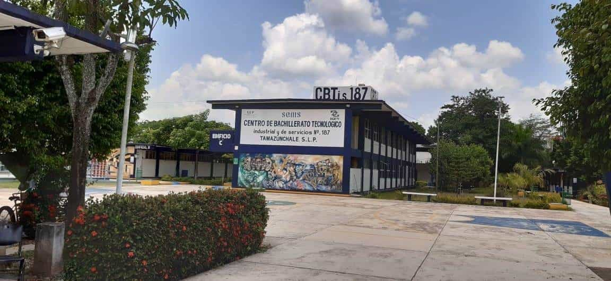

Crdts: Camiii y Arlette
Somos alumnos del CBTIS187, estamos en la especialidad de Programación y cursamos el cuarto semestre en el turno matutino. Este proyecto forma parte del submódulo "Construye Páginas Web" y está siendo guiado por el maestro José Fernando Chavez Vargas, quien imparte esta materia. Mi escuela el CBTIS 187 está implementando la estrategia de dejar de utilizar plásticos desechables y está promoviendo el uso de platos y vasos reutilizables como una medida para contrarrestar el uso excesivo de desechables en el plantel. Este cambio contribuirá significativamente a la reducción de residuos y al fomento de prácticas más sostenibles.
El grupo completo se unió para contribuir en la adquisición de un vaso reutilizable con el propósito de reducir el consumo de utensilios desechables en nuestra escuela, principalmente con la intención de minimizar la generación de residuos plásticos en nuestras instalaciones. Esta iniciativa surge del compromiso compartido por promover prácticas amigables con el medio ambiente y fomentar una cultura de sostenibilidad dentro de nuestro entorno educativo.
De esta manera, buscamos sensibilizar a toda la comunidad estudiantil y docente sobre la relevancia de adoptar hábitos más sostenibles en nuestra vida escolar, con el fin de generar un impacto positivo en el cuidado del medio ambiente.
El proyecto PEC es para promover una cultura de respeto y cuidado hacia el medio ambiente en todos los miembros de la comunidad educativa. El PEC busca integrar la educación ambiental de manera transversal en todas las áreas curriculares, así como en las actividades extracurriculares y en la gestión cotidiana de la institución.
El objetivo es que a través del PEC, los estudiantes desarrollen una conciencia ambiental sólida, adquieran conocimientos sobre la importancia de la conservación de la naturaleza, y se motiven a tomar acciones concretas para proteger el entorno. Esto puede incluir desde prácticas diarias como el ahorro de energía y agua, hasta proyectos más amplios como campañas de reforestación, limpieza de espacios naturales o la implementación de huertos escolares.
En resumen, el PEC busca formar ciudadanos comprometidos con el cuidado del medio ambiente, capaces de comprender los desafíos ambientales actuales y futuros, y de contribuir positivamente a su conservación.